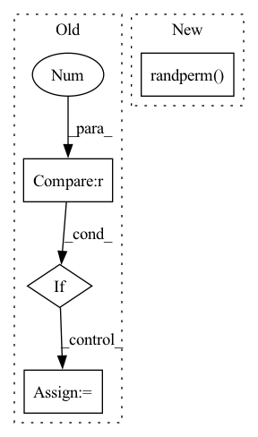

Pattern ID :23421
Before Change
label: (1,)
"""
neighbor = self.get_neighbor(self.ids[self.mask][index])
if (self.k_hop > 1) :
//// the index for next k level
k_ids = self.dst[self.src==index]
neighbors_khop = [neighbor]
//// TODO: simplify this process
for k in range(self.k_hop - 1):After Change
//// TODO temporally set the size of level 2 to 50
graph_selection = 50
if ids.shape[0]>graph_selection:
indices = torch.randperm( ids.shape[0]) [:graph_selection]
ids = ids[indices]
neighbor = neighbor[indices]
ids_khop = ids //// temp ids for next levelIn pattern: SUPERPATTERN
Frequency: 3
Non-data size: 4
Instances Fragment ID: 73553354
Project Name: wang-chen/lgl
Commit Name: ca4ab26e48d1fff88ed365ef54abe8d0b2529fad
Time: 2021-01-25
Author: yuhengq@andrew.cmu.edu
File Name: datasets/continuum.py
M Class Name: Continuum
N Class Name: Continuum
M Method Name: __getitem__(2)
N Method Name: __getitem__(2)
M Parent Class: VisionDataset
N Parent Class: VisionDataset
M File Name: datasets/continuum.py
N File Name: datasets/continuum.py
M Start Line: 73
M End Line: 91
N Start Line: 74
N End Line: 91
Before Change
// 计算每张图片中理论上的负样本个数
neg_roi_per_this_image = self.n_sample - pos_roi_per_this_image
neg_roi_per_this_image = int(min(neg_roi_per_this_image, neg_index.size))
if neg_index.size > 0 :
neg_index = np.random.choice(neg_index, size=neg_roi_per_this_image, replace=False)
// 将正负样本的roi索引合并到一起
keep_index = np.append(pos_index, neg_index)After Change
pos_roi_per_this_image = int(min(pos_roi_per_image, pos_num))
if pos_num > 0: // 兼容 0-d tensor
// pos_index = np.random.choice(pos_index, size=pos_roi_per_this_image, replace=False)
pos_index = pos_index[torch.randperm( pos_num) [:pos_roi_per_this_image]]
// 获取那些IOU在[neg_iou_thresh_lo, neg_iou_thresh_hi)区间的roi索引
// 其实这里感觉分配的不是很合理,因为IOU=0.49与0.51在数值上区别很小.人眼更是几乎看不出来(除非写轮眼) TODO 待实验 hi↑ lo↓
// neg_index = np.where((max_iou < self.neg_iou_thresh_hi) & (max_iou >= self.neg_iou_thresh_lo))[0] Fragment ID: 73553355
Project Name: pangkun248/faster-rcnn-pytorch
Commit Name: 811d49713cf13070465c16e51d96db0077647739
Time: 2021-08-26
Author: 39581901+pangkun248@users.noreply.github.com
File Name: utils/creator_tool.py
M Class Name: ProposalTargetCreator
N Class Name: ProposalTargetCreator
M Method Name: __call__(4)
N Method Name: __call__(6)
M Parent Class: object
N Parent Class: object
M File Name: utils/creator_tool.py
N File Name: utils/creator_tool.py
M Start Line: 176
M End Line: 224
N Start Line: 231
N End Line: 281
Before Change
ratios = [ratios]
ratio_sum = sum(ratios)
if ratio_sum == 1.0 :
ratios = ratios[:-1] // vsplit doesn"t take the final number into account.
elif ratio_sum > 1.0:
raise ValueError(f"ratios sum to more than 1.0: {ratios} (sum={ratio_sum})")
After Change
sizes = get_absolute_split_sizes(n_total=self.num_triples, ratios=ratios)
// Split indices
idx = torch.randperm( self.num_triples, generator=generator)
idx_groups = idx.split(split_size=sizes, dim=0)
// Split triples
triples_groups = [ Fragment ID: 73553352
Project Name: pykeen/pykeen
Commit Name: a007a273ff146107fd1b0c099d561c7b7279965a
Time: 2020-12-10
Author: berrendorf@dbs.ifi.lmu.de
File Name: src/pykeen/triples/triples_factory.py
M Class Name: TriplesFactory
N Class Name: TriplesFactory
M Method Name: split(0)
N Method Name: split(0)
M Parent Class:
N Parent Class:
M File Name: src/pykeen/triples/triples_factory.py
N File Name: src/pykeen/triples/triples_factory.py
M Start Line: 401
M End Line: 453
N Start Line: 542
N End Line: 578